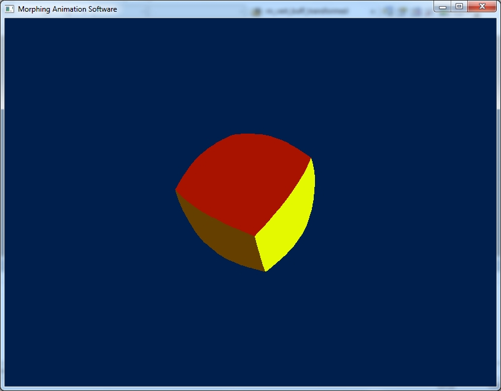
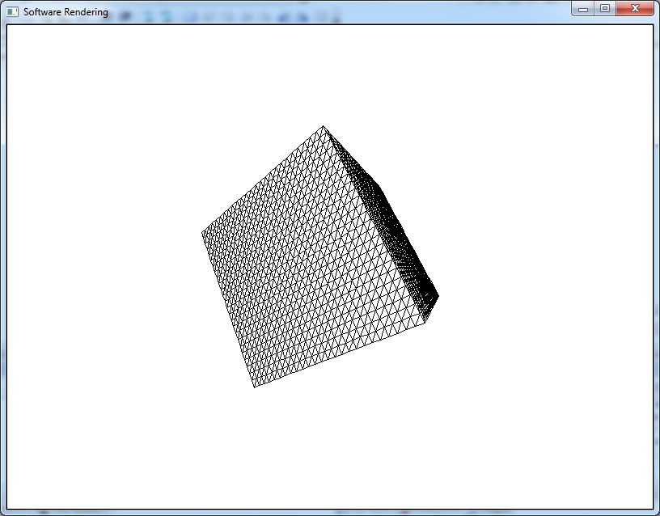

Загрузить архив с примерами ЗДЕСЬ.
Как осуществляется морфинг - нужно два объекта и обязательное условие у обеих объектов должно быть одинаковое кодичество вершин. Далее используя скаляр от 0 до 1 мы интерполируем вершины обеих объектов и получаем в результате третий объект который плавно перетекает из первого объекта во второй - этот результирующий объект мы и рисуем на экране.
В данном примере мы рассмотрим морфирующую анимацию. В коде примера мы загружаем из файла модель куба. Каждая сторона куба имеет 10х10 частей размер. На экране модель куба плавно преобразуется в сферу, сфера в пирамиду, и наоборот. Нам необходимо разбить куб на 10х10 частей каждой стороны куба что бы сделать с него сферу, которая бы была похожа на сферу (если у куба мало вершин сфера получится не такой гладкой). Код примера можно загрузить /src/03.011-morphing/Morphing_Software1.
В следующем примере мы "на лету" создадим модель куба для морфирующей анимации (т.е. каждая сторона куба разбита на вершины). Код примера можно загрузить /src/03.011-morphing/Morphing_Software2.
Пример модели куба для морфинга (предыдущий пример) можно увидеть на рисунке ниже:
Пример можно загрузить из папки src\03.011-morphing\Cube_for_Morphing1
В примере каждая из 6ти сторон куба изначально разбита на 25 частей по высоте и по ширине. Каждая часть имеет размер 2 пикселя. То есть всего размер каждой стороны куба 50х50 пикселей (25 * 2 = 50). К примеру мы построили верхнюю сторону куба- верхние два треугольника, вершины верхней стороны куба умножаем на матрицу поворота по оси X на 180 градусов- получаем нижнюю сторону куба. Таким образом получаем остальные стороны куба- умножаем вершины верхней стороны на матрицы поворота +90 и -90 по осям X и Z.
Далее из этой модели куба строим модель сферы, так как для морфинга важно что бы у всех моделей участвующих в анимации было одинаковое количество вершин. Сферу строим по следующему алгоритму:
for ( int i = 0; i < NumCubeVerts; i++ )
{
v = Normalize(cube_vert_buff[i]);
v.x *= 25.0f;
v.y *= 25.0f;
v.z *= 25.0f;
sphere_vert_buff[i] = v;
}
Что мы делаем - так как модель куба находится в локальных координатах объекта, т.е. цент модели в центре куба, мы нормализуем все вершины куба - и таким образом получаем сферу единичной длинны. После нормализации мы каждую вершину умножаем на треубемый радиус - и таким образом из сферы единичной длинны получаем сферу с требуемым радиусом. Теперь у нас есть модель сферы радиусом 25 единиц. Эта сфера может участвовать в морфинге.
Теперь из модели куба нам необходимо получить пирамиду. Это делается по следующему алгоритму:
for ( int i = 0; i < NumCubeVerts; i++ )
{
//переводим вершины от 0 до 50
if(cube_vert_buff[i].y < 0)
y = 25.0f + fabs(vert_buff[i].y) //получаем высоту вершины
//переводим вершины от 0 до 50
if(cube_vert_buff[i].y > 0)
y = 25.0f - vert_buff[i].y
if(cube_vert_buff[i].y == 0)
y = 25.0f
//вычисляем коофициент наклона стороны пирамиды
fac = y / 50.0f;
pyramid_vert_buff[i].x = cube_vert_buff[i].x * fac;
pyramid_vert_buff[i].y = cube_vert_buff[i].y;
pyramid_vert_buff[i].z = cube_vert_buff[i].z * fac;
}
В результате этих вычислений у нас получится пирамида. Теперь пирамида может участвовать в морфинге.
Второй пример модели куба для морфинга можно загрузить из папки src\03.011-morphing\Cube_for_Morphing2
В примере у нас есть исходный куб 8 вершин и 32 индекса. Мы каждый треугольник куба разбиваем на дополнительные треугольники (делаем тесселяцию) как это было в примере с геосферой. Можете сами попробовать добавить код из этого примера куба в пример с морфингом выше.
Еще один пример морфинга /src/03.011-morphing/Morphing_Software3. Под Windows 95 был такой скринсейвер 3D Flower Box - этот пример реализация этого скринсейвера.